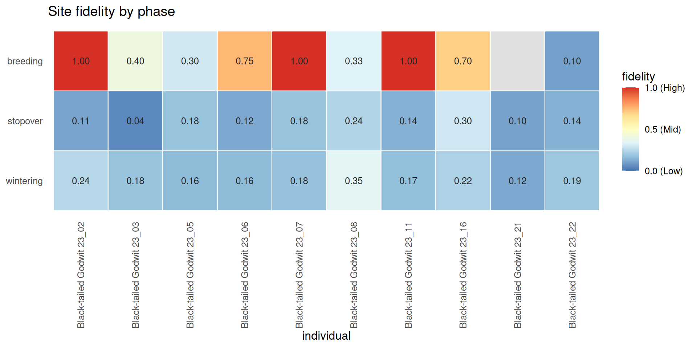

Overview
compute_isfi() quantifies how often an individual returns to the same temporary habitat (or nest) across years:
where n is unique clusters, c is unique years, and n_{i,years} is the number of years cluster i was visited. ISFI ranges from 0 (no fidelity) to 1 (every cluster revisited every year).
A single overall ISFI averaged across an entire annual cycle is biologically uninformative: a bird may be highly faithful to its wintering grounds but choose different stopover sites each year. The recommended workflow is therefore to stratify ISFI by life- history phase, exposing where in the cycle fidelity is strongest.
Setup
Build phase-labelled habitats
We feed godwit_demo through the full macro-meso pipeline (step-speed → BALM segmentation → DBSCAN → MPI → density-valley phase classification) to obtain a set of temporary habitats each labelled with a life-history phase:
data("godwit_demo")
godwit <- compute_step_speed(godwit_demo,
time_col = "time",
individual_col = "individual",
direction = "centered")
seg <- balm_segmentation(godwit,
variable_col = "step_speed",
individual_col = "individual",
verbose = FALSE)
stationary <- seg[!is.na(seg$cluster_type) & seg$cluster_type %in% c("LL", "LH"), ]
p <- detect_habitat_params(stationary, track = seg,
individual_col = "individual", time_col = "time")
#> eps = 0.656 km (migratory; 0.95-quantile of 2-comp GMM; flight/eps gap 306x)
#> minPts = 15 (~1.88 d min residence at 3.0 h sampling; knee)
hab <- dbscan_habitats(stationary,
individual_col = "individual",
eps = p$eps, minPts = p$minPts)
mpi <- compute_mpi(hab, individual_col = "individual",
time_col = "time", verbose = FALSE)
phs <- classify_phases(mpi, n_phases = 3, individual_col = "individual")
#> [classify_phases] 3 phase(s); peaks {0.035, 0.635, 0.964}; cut(s) {0.220, 0.846}; sizes {19963, 18973, 8016}; mean MPI {0.042, 0.615, 0.960}classify_phases() returns phase labels ordered by ascending mean MPI. We remap these to biologically meaningful names:
ph_df <- sf::st_drop_geometry(phs)
ph_order <- names(sort(tapply(ph_df$mpi, ph_df$phase, mean, na.rm = TRUE)))
phase_map <- setNames(c("wintering", "stopover", "breeding"), ph_order)
phs$phase_named <- factor(phase_map[as.character(phs$phase)],
levels = c("wintering", "stopover", "breeding"))
table(phs$phase_named, useNA = "ifany")
#>
#> wintering stopover breeding
#> 19963 18971 8018Per-phase ISFI
compute_isfi() with phase_col returns one row per (individual, phase) combination — exactly the breakdown needed for biological interpretation:
isfi_by_phase <- compute_isfi(phs,
time_col = "time",
individual_col = "individual",
cluster_col = "cluster_id",
phase_col = "phase_named")
#> [compute_isfi] 'Black-tailed Godwit 23_21::breeding' has only 1 year(s); ISFI undefined.
#> [compute_isfi] Computed for 30 individual_phase(s).
print(isfi_by_phase)
#> individual phase n_clusters n_years sum_cluster_years
#> 1 Black-tailed Godwit 23_22 wintering 33 4 52
#> 2 Black-tailed Godwit 23_22 stopover 47 3 60
#> 3 Black-tailed Godwit 23_22 breeding 10 2 11
#> 4 Black-tailed Godwit 23_08 wintering 13 3 22
#> 5 Black-tailed Godwit 23_08 stopover 17 2 21
#> 6 Black-tailed Godwit 23_08 breeding 3 2 4
#> 7 Black-tailed Godwit 23_11 stopover 41 4 58
#> 8 Black-tailed Godwit 23_11 wintering 73 4 110
#> 9 Black-tailed Godwit 23_11 breeding 1 3 3
#> 10 Black-tailed Godwit 23_03 wintering 11 3 15
#> 11 Black-tailed Godwit 23_03 stopover 23 2 24
#> 12 Black-tailed Godwit 23_03 breeding 5 2 7
#> 13 Black-tailed Godwit 23_06 stopover 21 3 26
#> 14 Black-tailed Godwit 23_06 wintering 25 3 33
#> 15 Black-tailed Godwit 23_06 breeding 4 2 7
#> 16 Black-tailed Godwit 23_21 wintering 21 3 26
#> 17 Black-tailed Godwit 23_21 stopover 39 2 43
#> 18 Black-tailed Godwit 23_21 breeding 3 1 NA
#> 19 Black-tailed Godwit 23_05 stopover 29 4 45
#> 20 Black-tailed Godwit 23_05 wintering 48 4 71
#> 21 Black-tailed Godwit 23_05 breeding 5 3 8
#> 22 Black-tailed Godwit 23_16 stopover 27 4 51
#> 23 Black-tailed Godwit 23_16 wintering 58 4 97
#> 24 Black-tailed Godwit 23_16 breeding 5 3 12
#> 25 Black-tailed Godwit 23_07 stopover 25 3 34
#> 26 Black-tailed Godwit 23_07 breeding 1 3 3
#> 27 Black-tailed Godwit 23_07 wintering 17 3 23
#> 28 Black-tailed Godwit 23_02 stopover 28 3 34
#> 29 Black-tailed Godwit 23_02 wintering 41 3 61
#> 30 Black-tailed Godwit 23_02 breeding 1 2 2
#> isfi
#> 1 0.19191919
#> 2 0.13829787
#> 3 0.10000000
#> 4 0.34615385
#> 5 0.23529412
#> 6 0.33333333
#> 7 0.13821138
#> 8 0.16894977
#> 9 1.00000000
#> 10 0.18181818
#> 11 0.04347826
#> 12 0.40000000
#> 13 0.11904762
#> 14 0.16000000
#> 15 0.75000000
#> 16 0.11904762
#> 17 0.10256410
#> 18 NA
#> 19 0.18390805
#> 20 0.15972222
#> 21 0.30000000
#> 22 0.29629630
#> 23 0.22413793
#> 24 0.70000000
#> 25 0.18000000
#> 26 1.00000000
#> 27 0.17647059
#> 28 0.10714286
#> 29 0.24390244
#> 30 1.00000000Fidelity heatmap
A compact way to read the per-phase fidelities is a heatmap: one column per individual, one row per phase ordered Breeding (top) → Stopover → Wintering (bottom), so the breeding-ground fidelity sits at the top. The demo carries a single individual, so the map is one column wide; on the full nine-individual dataset each bird adds a column, making between-individual differences immediately legible.
phase_order <- c("wintering", "stopover", "breeding") # bottom -> top
hm <- isfi_by_phase
hm$phase <- factor(hm$phase, levels = phase_order)
hm$individual <- factor(hm$individual)
ggplot(hm, aes(individual, phase, fill = isfi)) +
geom_tile(colour = "white", linewidth = 0.4) +
geom_text(aes(label = ifelse(is.na(isfi), "", sprintf("%.2f", isfi))),
size = 3.4, colour = "grey15") +
scale_fill_distiller(name = "fidelity", palette = "RdYlBu", direction = -1,
limits = c(0, 1), breaks = c(0, 0.5, 1),
labels = c("0.0 (Low)", "0.5 (Mid)", "1.0 (High)"),
na.value = "grey88") +
labs(x = "individual", y = NULL,
title = "Site fidelity by phase") +
theme_minimal(base_size = 12) +
theme(panel.grid = element_blank(),
axis.text.x = element_text(angle = 90, vjust = 0.5, hjust = 1))
Interpretation
Black-tailed Godwits are long-distance migrants with strong site fidelity. The expected pattern across phases:
- Breeding — highest ISFI; godwits return to the same nesting territory year after year.
- Wintering — usually high; the species is faithful to specific coastal mudflats and lagoons.
- Stopover — most variable; choice of refuelling sites depends on weather, food availability, and timing.
The numerical breakdown above quantifies these patterns for this specific individual.
INFI: nest-level fidelity
The same function applied to the output of detect_nests() yields the Individual Nest Fidelity Index:
nests <- detect_nests(breeding_pts,
time_col = "time",
individual_col = "individual")$nests
infi <- compute_isfi(nests,
time_col = "start_time",
individual_col = "individual",
cluster_col = "nest_id")See also
-
vignette("v04-mpi-phases")— phase classification (upstream) -
vignette("v07-st-dbscan-nesting")— produces the input for INFI
sessionInfo()
#> R version 4.6.0 (2026-04-24)
#> Platform: x86_64-pc-linux-gnu
#> Running under: Ubuntu 24.04.4 LTS
#>
#> Matrix products: default
#> BLAS: /usr/lib/x86_64-linux-gnu/openblas-pthread/libblas.so.3
#> LAPACK: /usr/lib/x86_64-linux-gnu/openblas-pthread/libopenblasp-r0.3.26.so; LAPACK version 3.12.0
#>
#> locale:
#> [1] LC_CTYPE=C.UTF-8 LC_NUMERIC=C LC_TIME=C.UTF-8
#> [4] LC_COLLATE=C.UTF-8 LC_MONETARY=C.UTF-8 LC_MESSAGES=C.UTF-8
#> [7] LC_PAPER=C.UTF-8 LC_NAME=C LC_ADDRESS=C
#> [10] LC_TELEPHONE=C LC_MEASUREMENT=C.UTF-8 LC_IDENTIFICATION=C
#>
#> time zone: UTC
#> tzcode source: system (glibc)
#>
#> attached base packages:
#> [1] stats graphics grDevices utils datasets methods base
#>
#> other attached packages:
#> [1] ggplot2_4.0.3 sf_1.1-1 movepp_0.1.4
#>
#> loaded via a namespace (and not attached):
#> [1] gtable_0.3.6 jsonlite_2.0.0 dplyr_1.2.1 compiler_4.6.0
#> [5] tidyselect_1.2.1 Rcpp_1.1.1-1.1 scales_1.4.0 yaml_2.3.12
#> [9] fastmap_1.2.0 dbscan_1.2.5 R6_2.6.1 generics_0.1.4
#> [13] classInt_0.4-11 s2_1.1.11 knitr_1.51 tibble_3.3.1
#> [17] units_1.0-1 DBI_1.3.0 pillar_1.11.1 RColorBrewer_1.1-3
#> [21] rlang_1.2.0 xfun_0.58 S7_0.2.2 otel_0.2.0
#> [25] cli_3.6.6 withr_3.0.2 magrittr_2.0.5 wk_0.9.5
#> [29] class_7.3-23 digest_0.6.39 grid_4.6.0 mclust_6.1.2
#> [33] lifecycle_1.0.5 vctrs_0.7.3 KernSmooth_2.23-26 proxy_0.4-29
#> [37] evaluate_1.0.5 glue_1.8.1 farver_2.1.2 e1071_1.7-17
#> [41] rmarkdown_2.31 tools_4.6.0 pkgconfig_2.0.3 htmltools_0.5.9